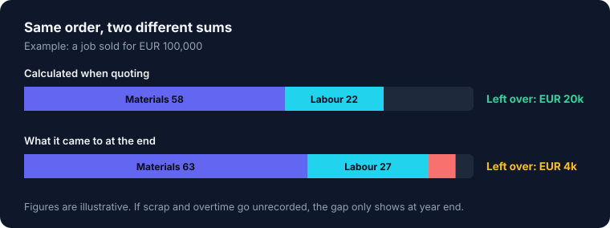

Production Management
When does production management software become necessary?
Most manufacturers start out with Excel, paper work orders and a WhatsApp group. With five or ten orders there is nothing wrong with that arrangement; everyone knows where everything is. When the number of orders reaches thirty or forty, the same arrangement starts losing a little money every day, and nobody adds up that loss and puts it in front of you.

Familiar scenes on the shop floor
We see the same scenes again and again in the plants we visit. A customer calls to ask about their order; the salesperson says "let me check and call you back" and goes down to the shop floor. The hinges for the doors shipping on Thursday ran out on Tuesday and nobody noticed. Parts that came out wrong at cutting have been set aside in a corner, but how many there are is not written down anywhere.
The plan, too, is usually known to one person, most often the production manager or the most senior foreman. When that person takes a week off, work goes on but slows down, because there is nobody else to decide which job should be brought forward.
Then there is the question of price. When you ask "how much do we make on this door?", the answer in most companies is last year's price plus an increase. The data needed to work out the real cost — how many hours of labour went in and how much material was thrown away — has never been collected.

Who ends up paying for this?
None of these problems puts a company in difficulty on its own. The damage builds up when they all happen together.
Late deliveries
For an order that goes out late, sometimes you pay a penalty and sometimes you give a discount. The bigger loss comes afterwards: the customer gives their next job to another company that keeps the dates it promises, and does not tell you.
Money sitting in the warehouse
When nobody knows how much of which material will be needed when, purchasing is done by instinct. The result is six months' worth of sheet metal in the warehouse and no screws for tomorrow's job. The line stops and the screws are bought from the nearest hardware shop at whatever price is asked.
Scrap that is never recorded
If parts that go for scrap are not recorded, you cannot know which machine or which shift has the problem. At month end you see that material is missing and cannot find out why.
Everything being referred to you
Because the information is not held in a system, even the smallest decision comes to the owner or the manager. The company grows only as far as those one or two people can fit into a day.
What does software do here?
What we call production management software is a way of keeping records that brings the information above into one place. The brand and the screens vary, but what it does is more or less the same.
When an order is confirmed, the system turns it into a work order. The work order states how much of which material will be used, which operations it will go through in which sequence, and when it is due. This information is entered once; it is not rewritten on paper or in a message afterwards.
When the operator starts and finishes a job, a record is made from a tablet or a barcode scanner. How many pieces came out, how many were defective, why the machine stopped — all of it enters the system at that moment. Nobody has to collect forms in the evening and type them into Excel.

Because the open work orders are known, material requirements produce themselves. The system shows a week in advance that the hinges will run out on Tuesday, and purchasing orders accordingly.
On the planning side, which machine and which crew are booked on which day is visible on one screen. When a new order comes in, you give the delivery date by looking at this screen.
Finally, cost. Because the materials consumed, the time taken and the scrap are recorded against the work order, you see what each order cost you. The example below may look exaggerated, but in companies where scrap and overtime are never recorded, differences of this size do come up.

"Our business is different; it won't fit into software"
We hear this in almost every meeting, and it is not an unfair objection. In a make-to-order company every job is different from the last. In mass production the main concern is speed. In a contract manufacturing shop the material belongs to the customer, and stock is accounted for in a completely different way. When you take an off-the-shelf package and install it untouched, these differences make the system unusable.
That is why we do not start with the software. First we map how an order moves through the company, then we set the system up around that flow. If employees have to change the way they work because the software demands it, something has gone wrong in the implementation.
When does Excel stop being enough?
A three-person workshop does not need production software from day one. From what we have seen, Excel can no longer carry the load once one of these situations arises:
- When the number of jobs running at once is more than one person can keep in their head.
- When the product goes through several stages and waits between them.
- When you do not know how many orders went out late last month.
- When work stops several times a month because material is missing.
- When a second shift, a second workshop or a new product group is on the agenda.
Which software?
There are many options: broad ERP systems, MES solutions that look only at the shop floor, industry-specific packages, and applications written for a particular company. Which one is right depends on the size of the company and what it makes.
We are not trying to sell a particular product. For some companies we have implemented a tailored ERP; for others we have written a simple app specific to their workshop. Our experience is this: an expensive system that does not fit the company is less useful than a cheap one that has been fitted well.
Where do you start?
As a first step, follow a single order from start to finish. Where was the quote written, how was the order passed to the shop floor, how was material requested, how was shipping notified? Note every point where information passed onto paper, into a message or into somebody's memory. In most companies that list fills a page.
Then pick the one item on the list that hurts most. Usually it is either work order tracking or material requirements. Projects that try to fix everything at once are left half finished.
Try the area you have chosen on a single line or a single product group first. Once the team begins to trust the system, you add planning, costing and quality in turn.
Frequently asked questions
Is it necessary for a small workshop too?
Even in a five-person workshop, putting order and material tracking in order pays off. At that size you do not need a big system; a simple setup built around the work is enough.
Will the foremen and operators use it?
They will if the screen is simple. Usually the operator is asked for two taps: start the job, finish the job. In systems that go unused, the person on the shop floor has generally been given extra work with nothing in return that makes their own job easier.
How long does implementation take?
It depends on the scope. Putting work order tracking alone into use takes a few weeks. A system that also covers planning, costing and quality takes a few months. We prefer to go step by step so that the first benefit is seen early.
Will it work with our current accounting program?
In most cases, yes. The production system can be set up to transfer data to the accounting program you use. You do not have to change your accounting program.
Let’s bring order to your business too.
We map the path of one of your orders together and see where it gets stuck.